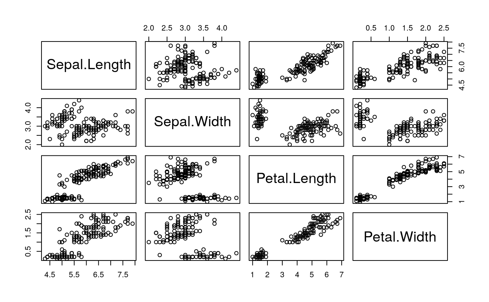
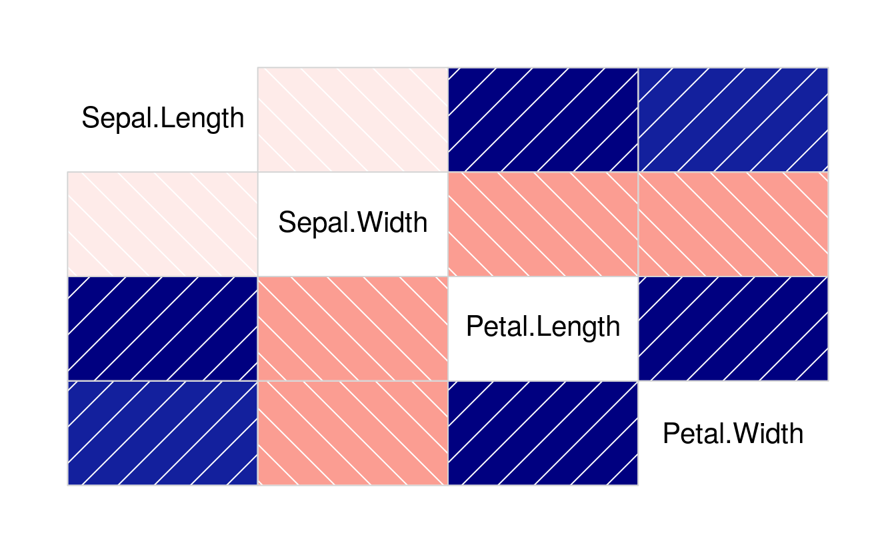
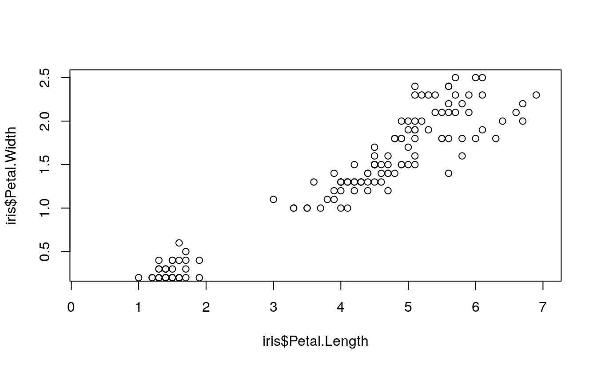
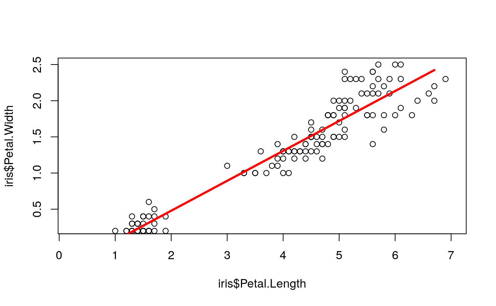
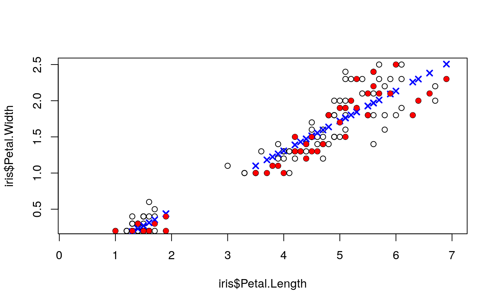
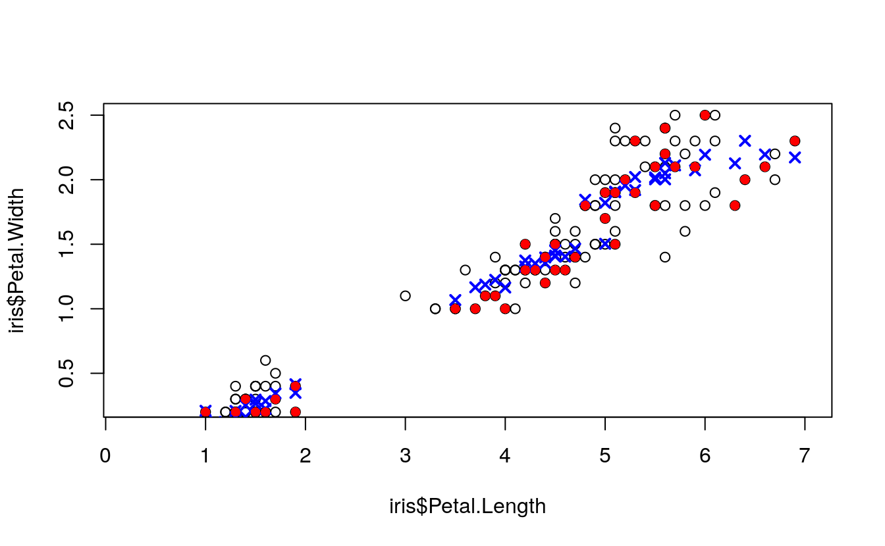
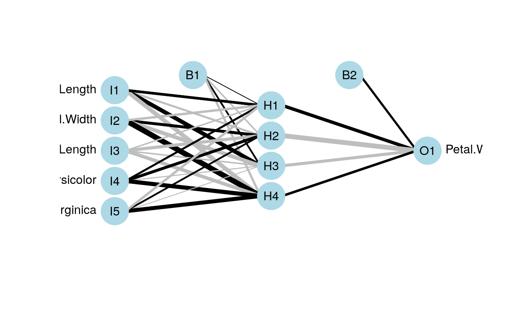
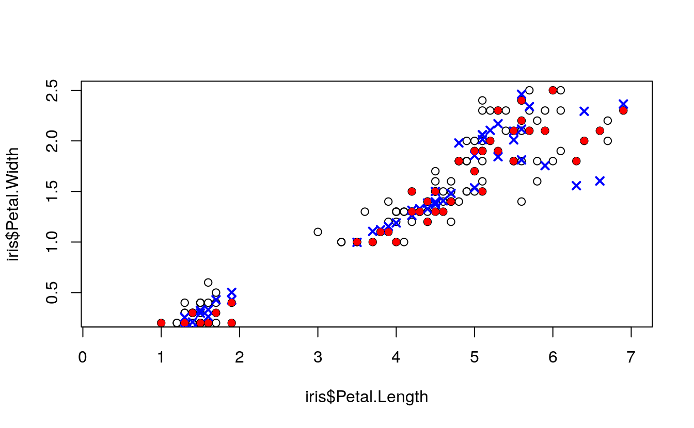

32 Evaluation of three linear regression models
- Dataset:
iris.csv - Algorithms:
- Simple Linear Regression
- Multiple Regression
- Neural Networks
32.1 Introduction
https://www.matthewrenze.com/workshops/practical-machine-learning-with-r/lab-3a-regression.html
32.2 Explore the Data
- Load Iris data
- Plot scatterplot
- Plot correlogram
data(iris)Create scatterplot matrix
plot(iris[1:4])
library(corrgram)
#> Registered S3 method overwritten by 'seriation':
#> method from
#> reorder.hclust gclus
corrgram(iris[1:4])
cor(iris[1:4])
#> Sepal.Length Sepal.Width Petal.Length Petal.Width
#> Sepal.Length 1.000 -0.118 0.872 0.818
#> Sepal.Width -0.118 1.000 -0.428 -0.366
#> Petal.Length 0.872 -0.428 1.000 0.963
#> Petal.Width 0.818 -0.366 0.963 1.000
cor(
x = iris$Petal.Length,
y = iris$Petal.Width)
#> [1] 0.963
32.3 Create Training and Test Sets
set.seed(42)
indexes <- sample(
x = 1:150,
size = 100)
train <- iris[indexes, ]
test <- iris[-indexes, ]32.4 Predict with Simple Linear Regression
simpleModel <- lm(
formula = Petal.Width ~ Petal.Length,
data = train)
plot(
x = iris$Petal.Length,
y = iris$Petal.Width,
xlim = c(0.25, 7),
ylim = c(0.25, 2.5))
lines(
x = train$Petal.Length,
y = simpleModel$fitted,
col = "red",
lwd = 3)
summary(simpleModel)
#>
#> Call:
#> lm(formula = Petal.Width ~ Petal.Length, data = train)
#>
#> Residuals:
#> Min 1Q Median 3Q Max
#> -0.5684 -0.1279 -0.0307 0.1280 0.6385
#>
#> Coefficients:
#> Estimate Std. Error t value Pr(>|t|)
#> (Intercept) -0.3486 0.0476 -7.33 6.7e-11 ***
#> Petal.Length 0.4137 0.0119 34.80 < 2e-16 ***
#> ---
#> Signif. codes: 0 '***' 0.001 '**' 0.01 '*' 0.05 '.' 0.1 ' ' 1
#>
#> Residual standard error: 0.209 on 98 degrees of freedom
#> Multiple R-squared: 0.925, Adjusted R-squared: 0.924
#> F-statistic: 1.21e+03 on 1 and 98 DF, p-value: <2e-16
simplePredictions <- predict(
object = simpleModel,
newdata = test)
plot(
x = iris$Petal.Length,
y = iris$Petal.Width,
xlim = c(0.25, 7),
ylim = c(0.25, 2.5))
points(
x = test$Petal.Length,
y = simplePredictions,
col = "blue",
pch = 4,
lwd = 2)
points(
x = test$Petal.Length,
y = test$Petal.Width,
col = "red",
pch = 16)
32.5 Predict with Multiple Regression
multipleModel <- lm(
formula = Petal.Width ~ .,
data = train)
summary(multipleModel)
#>
#> Call:
#> lm(formula = Petal.Width ~ ., data = train)
#>
#> Residuals:
#> Min 1Q Median 3Q Max
#> -0.5769 -0.0843 -0.0066 0.0978 0.4731
#>
#> Coefficients:
#> Estimate Std. Error t value Pr(>|t|)
#> (Intercept) -0.5088 0.2277 -2.23 0.02779 *
#> Sepal.Length -0.0486 0.0593 -0.82 0.41435
#> Sepal.Width 0.2032 0.0594 3.42 0.00092 ***
#> Petal.Length 0.2103 0.0641 3.28 0.00146 **
#> Speciesversicolor 0.6769 0.1583 4.28 4.5e-05 ***
#> Speciesvirginica 1.0762 0.2126 5.06 2.1e-06 ***
#> ---
#> Signif. codes: 0 '***' 0.001 '**' 0.01 '*' 0.05 '.' 0.1 ' ' 1
#>
#> Residual standard error: 0.176 on 94 degrees of freedom
#> Multiple R-squared: 0.949, Adjusted R-squared: 0.947
#> F-statistic: 352 on 5 and 94 DF, p-value: <2e-16
multiplePredictions <- predict(
object = multipleModel,
newdata = test)
plot(
x = iris$Petal.Length,
y = iris$Petal.Width,
xlim = c(0.25, 7),
ylim = c(0.25, 2.5))
points(
x = test$Petal.Length,
y = multiplePredictions,
col = "blue",
pch = 4,
lwd = 2)
points(
x = test$Petal.Length,
y = test$Petal.Width,
col = "red",
pch = 16)
32.6 5. Predict with Neural Network Regression
scaledIris <- data.frame(
Sepal.Length = normalize(iris$Sepal.Length),
Sepal.Width = normalize(iris$Sepal.Width),
Petal.Length = normalize(iris$Petal.Length),
Petal.Width = normalize(iris$Petal.Width),
Species = iris$Species)
scaledTrain <- scaledIris[indexes, ]
scaledTest <- scaledIris[-indexes, ]
library(nnet)
neuralRegressor <- nnet(
formula = Petal.Width ~ .,
data = scaledTrain,
linout = TRUE,
skip = TRUE,
size = 4,
decay = 0.0001,
maxit = 500)
#> # weights: 34
#> initial value 64.175158
#> iter 10 value 0.498340
#> iter 20 value 0.439307
#> iter 30 value 0.419373
#> iter 40 value 0.415119
#> iter 50 value 0.412305
#> iter 60 value 0.410862
#> iter 70 value 0.404854
#> iter 80 value 0.402606
#> iter 90 value 0.397903
#> iter 100 value 0.396295
#> iter 110 value 0.394292
#> iter 120 value 0.392628
#> iter 130 value 0.390306
#> iter 140 value 0.389577
#> iter 150 value 0.388916
#> iter 160 value 0.387607
#> iter 170 value 0.382857
#> iter 180 value 0.377332
#> iter 190 value 0.371974
#> iter 200 value 0.366019
#> iter 210 value 0.357405
#> iter 220 value 0.351831
#> iter 230 value 0.347613
#> iter 240 value 0.344466
#> iter 250 value 0.341515
#> iter 260 value 0.340828
#> iter 270 value 0.340236
#> iter 280 value 0.338736
#> iter 290 value 0.337991
#> iter 300 value 0.336182
#> iter 310 value 0.333793
#> iter 320 value 0.331206
#> iter 330 value 0.330171
#> iter 340 value 0.329803
#> iter 350 value 0.329587
#> iter 360 value 0.329343
#> iter 370 value 0.328909
#> iter 380 value 0.327579
#> iter 390 value 0.326227
#> iter 400 value 0.323911
#> iter 410 value 0.322154
#> iter 420 value 0.320878
#> iter 430 value 0.320122
#> iter 440 value 0.319153
#> iter 450 value 0.318239
#> iter 460 value 0.316869
#> iter 470 value 0.315668
#> iter 480 value 0.314685
#> iter 490 value 0.314604
#> iter 500 value 0.314257
#> final value 0.314257
#> stopped after 500 iterations
scaledPredictions <- predict(
object = neuralRegressor,
newdata = scaledTest)
neuralPredictions <- denormalize(
x = scaledPredictions,
y = iris$Petal.Width)
plot(
x = iris$Petal.Length,
y = iris$Petal.Width,
xlim = c(0.25, 7),
ylim = c(0.25, 2.5))
points(
x = test$Petal.Length,
y = neuralPredictions,
col = "blue",
pch = 4,
lwd = 2)
points(
x = test$Petal.Length,
y = test$Petal.Width,
col = "red",
pch = 16)